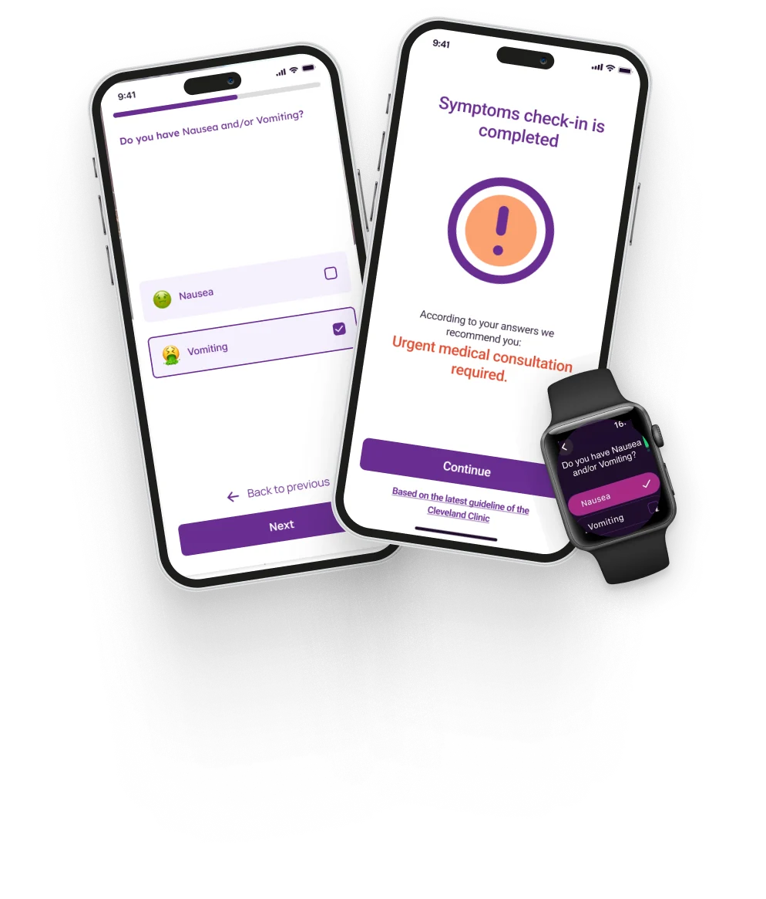
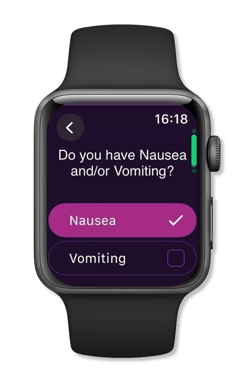
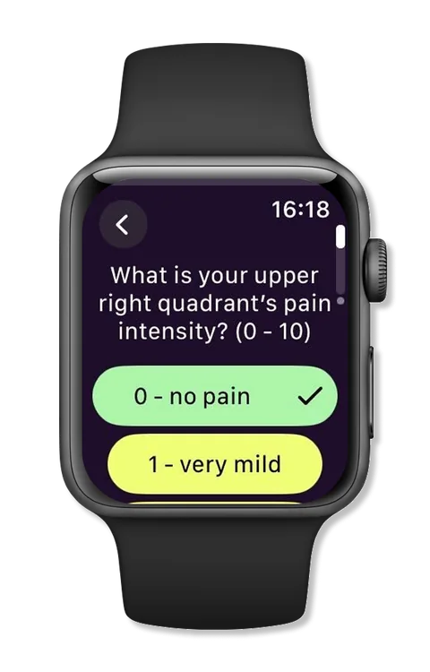
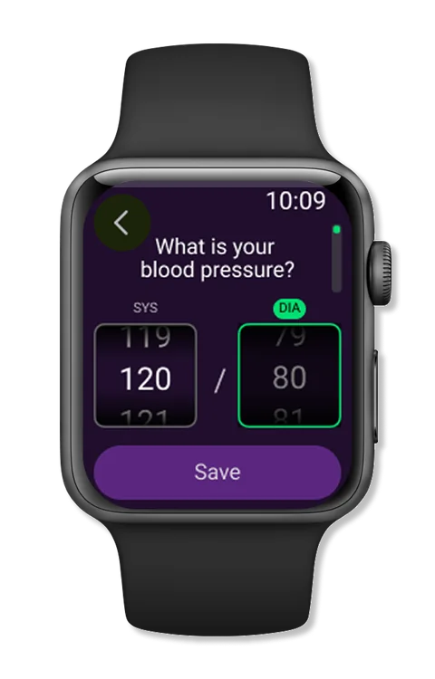
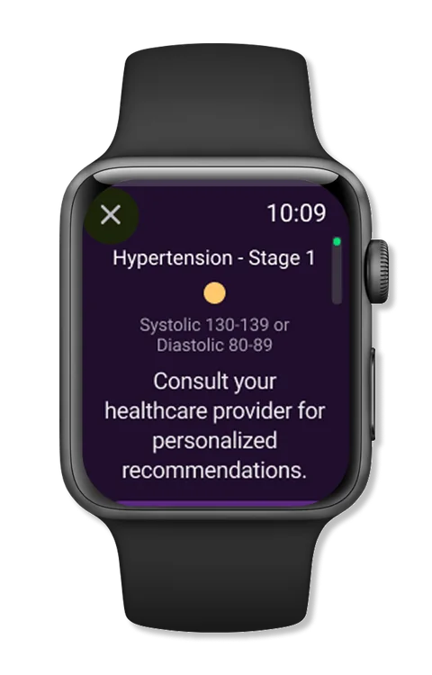
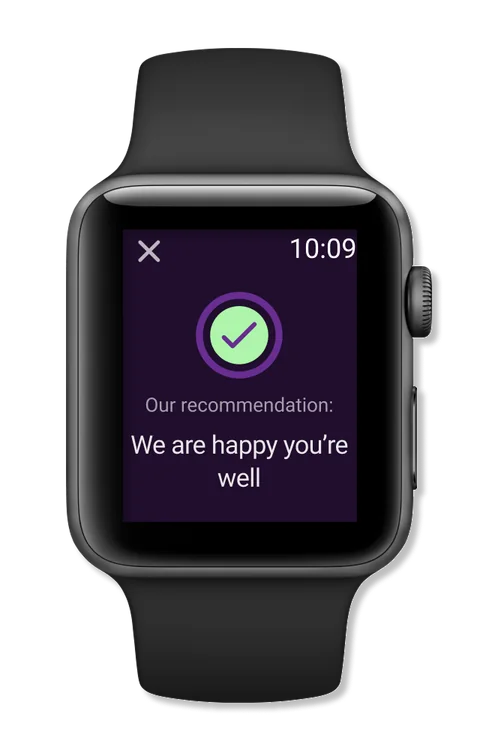
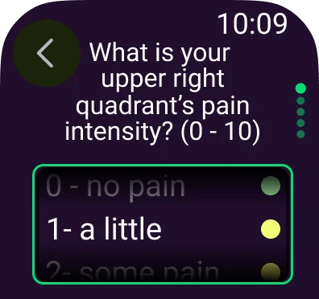
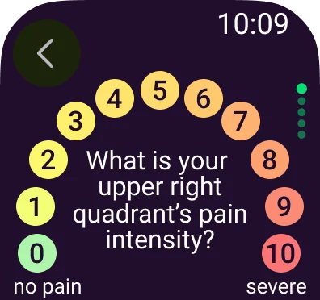
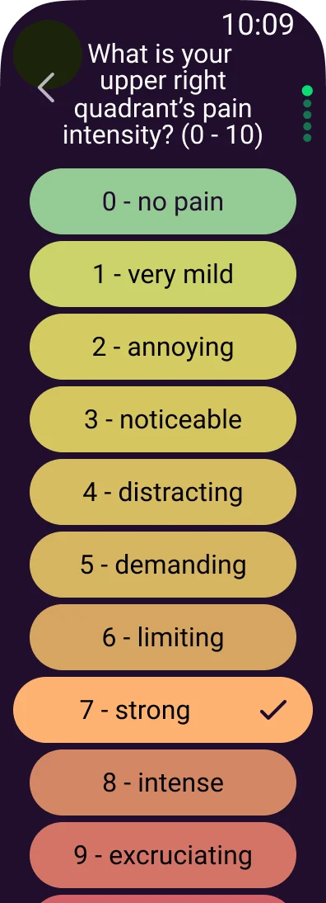

SAFER
Instant alerts
Her doctor, partner or chosen contacts are notified when symptoms turn dangerous.
She Matters · Product Design Case Study
Symptom check-ins and instant alerts, on iPhone and Apple Watch, for Black pregnant women at risk of preeclampsia.

Our partners, Jade and March, advocate for Black women’s rights in the US. As mothers themselves, they know first-hand the danger of preeclampsia and the isolation many Black mothers feel.
The goal was a mobile app that tracks symptoms, gives emergency help when they turn dangerous, and connects women with a community that understands them.
Why it mattered
She Matters was built for Black pregnant women in the US: a socially isolated group at much higher risk of preeclampsia, pregnancy loss and maternal death. The core of the MVP was an instant alert: when symptoms turn dangerous, the app notifies the people on her list, such as her doctor or partner.
CONSTRAINTS
MVP PRIORITIES
PROCESS & CONTRIBUTION
1. Discovery
The partners gave us access to their online community, so we could hear women in their own words. Together with stakeholder interviews with healthcare providers and advocacy groups, this shaped a persona, a set of product goals and the MVP scope.
Competitor apps for pregnancy tracking were rich in features but often overwhelming, and none were built around urgent symptoms.
WHAT WOMEN TOLD US
2. Design system
The partners’ purple and pink brand stayed, so the app would feel familiar next to their other products. On top of it I added what a health app needs: a text palette and a separate eleven-step pain and danger scale, from green to red, used the same way on the phone and the watch.
Components, from buttons and inputs to severity sliders and task cards, were built on these styles. To show where a symptom is felt, I used AI-generated images, which let us cover many symptoms quickly and consistently.
3. Designing for the wrist
This was my first Apple Watch project, and I designed it in close partnership with the developer, who brought his own research and observations of the platform into every decision.
The hardest problem was the severity scale: 0 to 10, eleven options, on a screen too small for eleven tappable buttons. And it had to work for a woman under stress, possibly with blurred vision, high blood pressure and nausea.





Together we researched best practices, prototyped several layouts and tested them with different groups. We chose the one that stayed easiest to read and tap: one full-width, colour-coded row per level, from green to red, with the word always beside the colour.



We also rewrote the level names. Clinical labels like “can’t ignore” and “can’t work” became short, everyday words that fit on one line of a watch and still mean the same thing to every woman reading them.
4. Symptom check-in
On the phone, the check-in asks one question per screen, with a progress bar and an easy way back. Images show what a symptom looks or feels like, so women can recognise it rather than describe it.
The result is graded by the same colour scale, from “We are happy you’re well” to “Urgent medical consultation required”, and is based on the latest guideline of the Cleveland Clinic. When the answers are dangerous, the alert reaches her chosen contacts.
5. Release feedback
We released the first version to a beta group. Its feedback showed that first-time users struggled to understand what to tap next, so I designed an illustrated tutorial that appears on first launch and walks through the daily tasks, the check-ins and the “+” button.
DESIGN OUTCOME
An iPhone and Apple Watch app that helps women notice dangerous symptoms early and reach the people who can help.
SAFER
Her doctor, partner or chosen contacts are notified when symptoms turn dangerous.
ON THE WRIST
Three scale layouts tested with the developer; the clearest one shipped.
CLEARER
An illustrated tutorial for women opening the app for the first time.
UX research · Apple Watch design · Healthcare UX · Accessibility under stress · Design systems · Prototyping · Developer collaboration
NEXT PROJECT